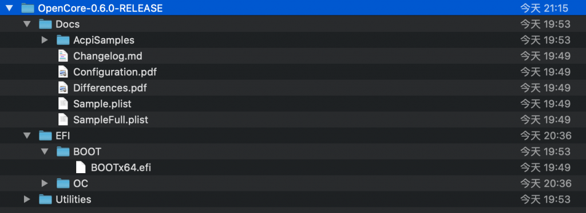
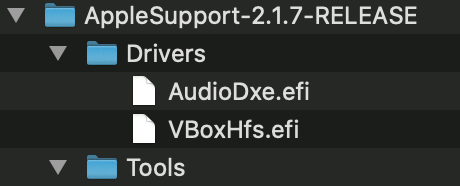
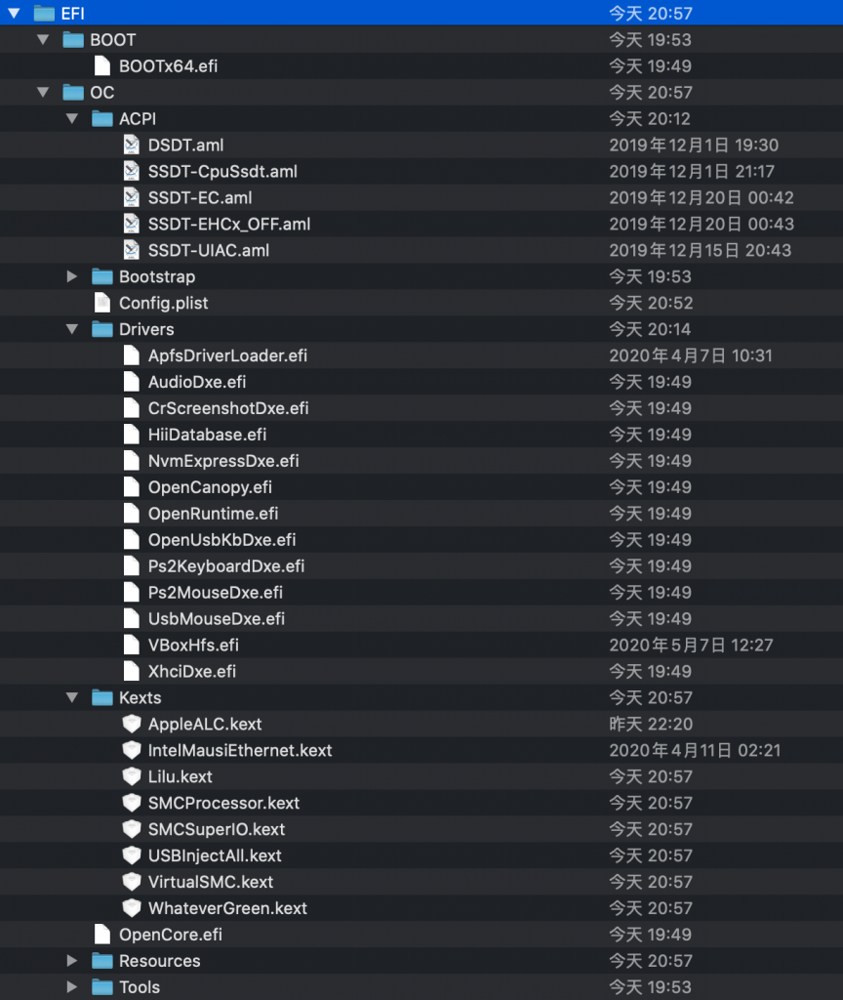

Opencore 的编译, 驱动的编译及导出
需要编译源码：**OpenCorePkg**
安装工具：Command Line Tools
1 | lt@iMac ~ % sudo xcode-select --install |
OpenCorePkg
你想保存下载的任意目录，执行下载并运行 ./macbuild.tool 执行源码编译：
1 | lt@iMac ~ % git clone https://github.com/acidanthera/OpenCorePkg.git |
opencore0.6.0的命令改为build_oc.tool。
编译完成的OpenCore-0.6.0-RELEASE.zip,文件路径：
OpenCorePkg/UDK/Build/OpenCorePkg/RELEASE_XCODE5/X64/
重命名Docs/Sample.plist 为Config.plist

AppleSupportPkg(不再需要编译，已包含在OpenCorepkg)
1 | lt@iMac ~ % git clone https://github.com/acidanthera/AppleSupportPkg.git |
编译完成的AppleSupport-2.1.7-RELEASE.zip,文件路径：
AppleSupportPkg/UDK/Build/AppleSupportPkg/RELEASE_XCODE5/X64

将需要的驱动，配置文件放到相应的文档目录。

更多内容：
https://tl8517.com/category/system/hackintosh/
参考链接：
http://bbs.pcbeta.com/forum.php?mod=viewthread&tid=1820729&highlight=